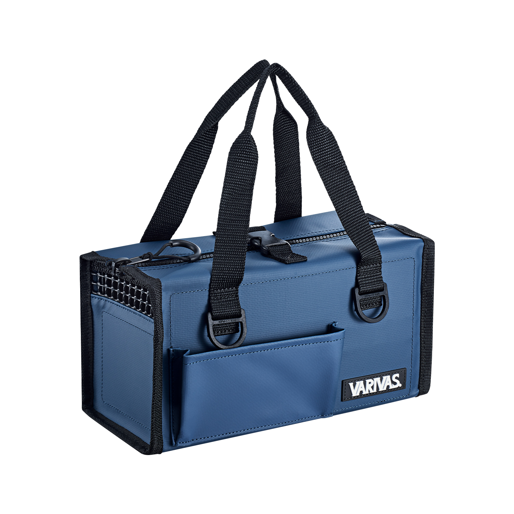
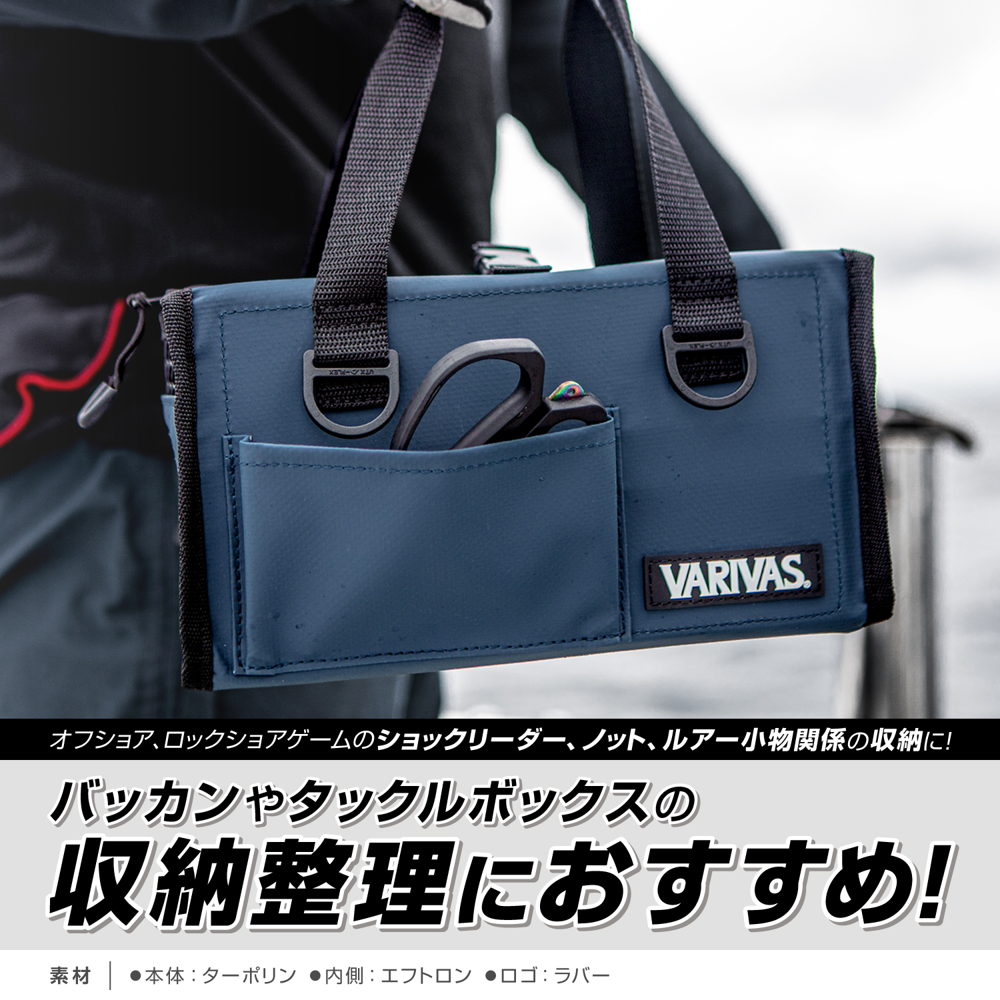
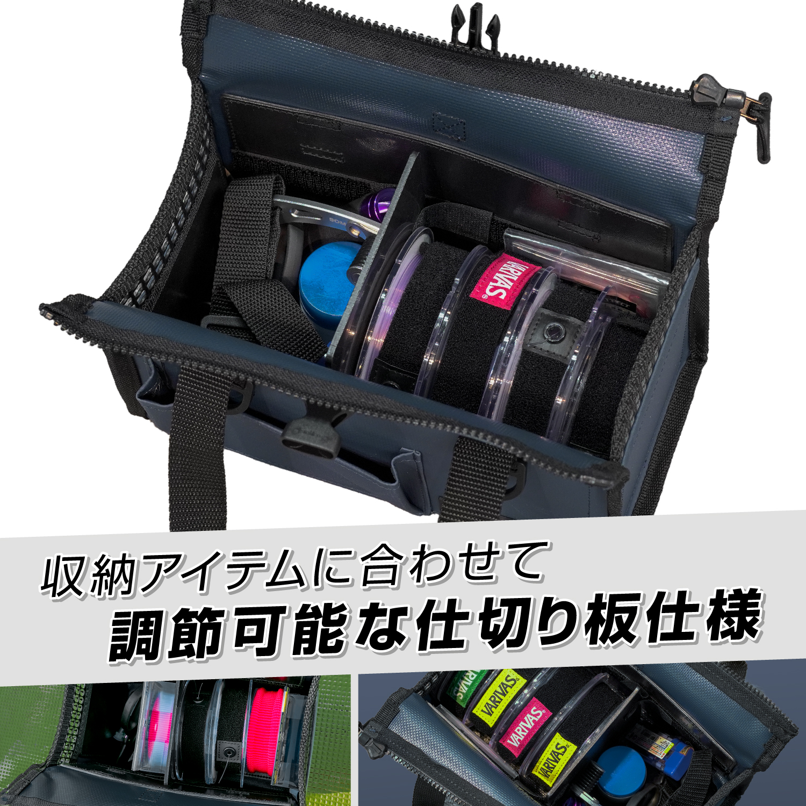
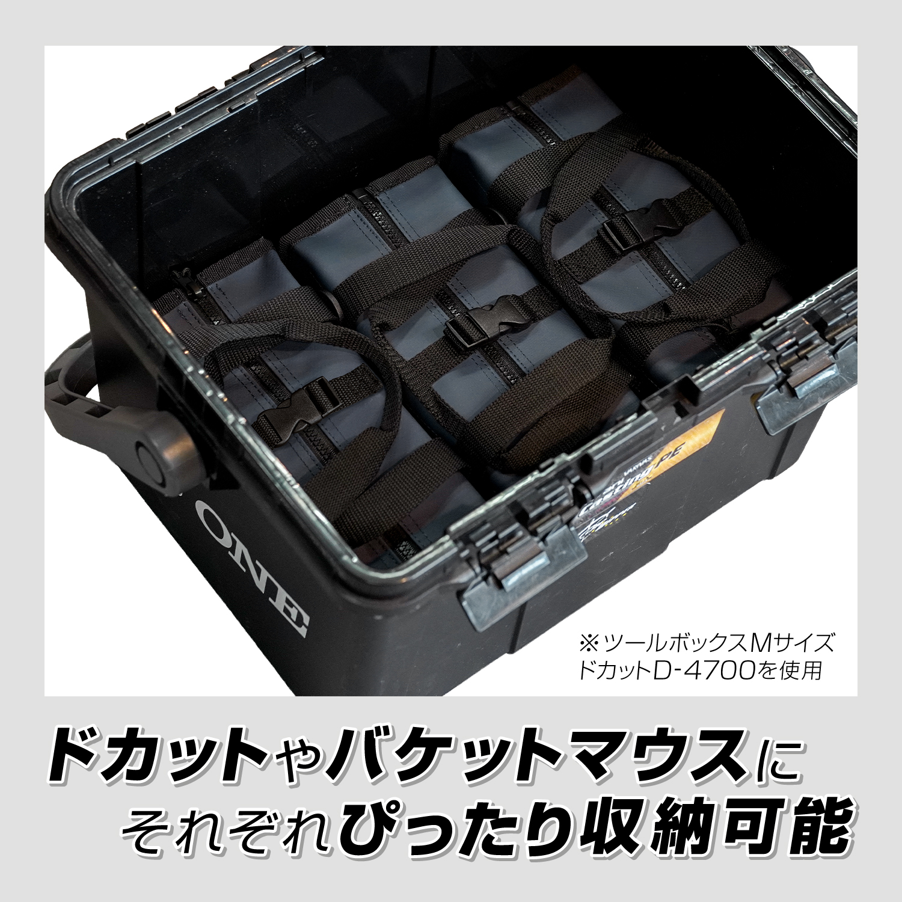
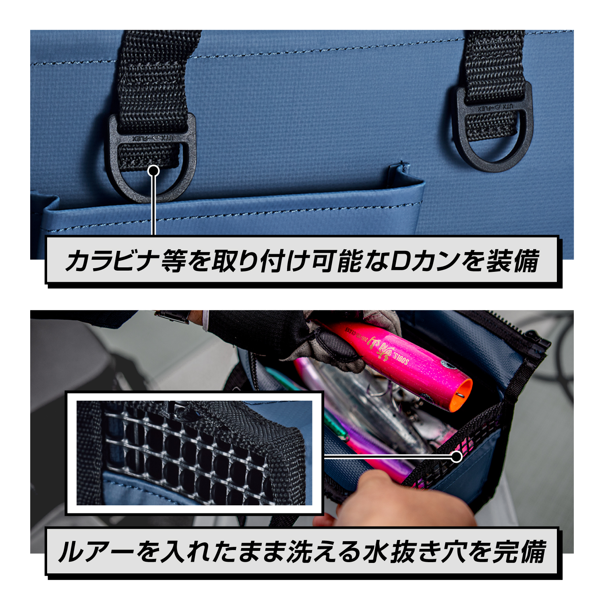

VARIVAS ツールボックス VAAC-85
（VARIVAS ToolBox VAAC-85）
ツールボックス VAAC-85は、バリバスのショックリーダーや小物を収納するためのツールボックスです。
仕切り板を自由に調節できて、ドカットやバケットマウスの中にぴったり収まるサイズなのが最大の特徴。オフショアやロックショアで使うショックリーダー・ノットの道具・ルアー小物を、バッカンやタックルボックスの中でスッキリ整理できます。

画像出典:VARIVAS公式HP
スペック
- メーカー
- VARIVAS（バリバス）
- 品番
- VAAC-85
- サイズ
- M：幅135×高さ250×奥行115mm
L：幅135×高さ270×奥行115mm - 対応するボックス
- M：ドカット D-4700／バケットマウス BM-7000
L：ドカット D-5000／バケットマウス BM-9000 - 素材
- 本体：ターポリン／内側：エフトロン／ロゴ：ラバー
- カラー
- ネイビー
- 価格
- M：4,500円／L：5,500円（メーカー希望小売価格）
- 発売
- 2026年11月
▼今すぐチェック

ツールボックス VAAC-85の特徴
ショックリーダーや小物を、バッカンの中でスッキリ整理
-
調節できる仕切り板
中の仕切り板は、入れるアイテムに合わせて位置を変えられる。リーダーのスプールやノットを組む道具、ルアーの小物を分けて入れられる。
-
ドカット・バケットマウスにぴったり
Mサイズはドカット D-4700・バケットマウス BM-7000、Lサイズはドカット D-5000・バケットマウス BM-9000にぴったり収まるサイズ。タックルボックスの中でも動きにくく、取り出しやすい。
-
ルアーを入れたまま洗える水抜き穴
水抜き穴が付いているので、釣行後にルアーを入れたまま丸ごと水洗いできる。カラビナなどを付けられるDカンも付いている。
ツールボックス VAAC-85の使い方
ドカットやバケットマウスの中に入れて、ショックリーダーのスプールとノットを組む道具を1か所にまとめておくのがおすすめの使い方です。
仕切り板でリーダーの太さごとに分けておくと、現場ですぐに取り出せます。釣行後は、ルアーを入れたまま水抜き穴から水を流して洗い、しっかり乾かしましょう。
ツールボックス VAAC-85がおすすめの人
オフショアのジギングやキャスティング、ロックショアの青物狙いなど、太さの違うショックリーダーや小物をたくさん持ち歩く人におすすめです。
ドカットやバケットマウスを使っていて、中がごちゃごちゃしがちな人にもぴったり。持ち手が付いているので、ボックスから出してそのまま船や磯に持っていくこともできます。リーダーや小物をすぐに取り出せるので、ナブラが出た時や釣れる時合いにも手早く準備できます。
ワンポイント
サイズは、今使っているドカット・バケットマウスの型番に合わせて選ぶのが失敗しないコツです。D-4700・BM-7000ならM、D-5000・BM-9000ならLを選びましょう。
M・Lサイズの選び方
| サイズ | 大きさ | 合うボックス |
|---|---|---|
| M | 幅135×高さ250×奥行115mm | ドカット D-4700／バケットマウス BM-7000 |
| L | 幅135×高さ270×奥行115mm | ドカット D-5000／バケットマウス BM-9000 |
MとLの違いは高さだけ。使っているボックスの型番に合わせて選ぶのがおすすめ。
ここが使いやすい！4つのポイント
ツールボックス VAAC-85の使いやすいポイントを、公式の写真で1つずつ紹介します。
バッカン・タックルボックスの中をスッキリ整理

オフショアやロックショアで使うショックリーダー、ノットを組む道具、ルアーの小物をまとめて入れられます。外側にはポケットもあって、ハサミやプライヤーなどすぐ使いたい道具を差しておけます。ターポリンの本体は水や汚れに強く、船の上でも気にせず使えます。
中の仕切り板を自由に動かせる

仕切り板は、入れるアイテムに合わせて位置を変えられます。リーダーのスプールを太さごとに並べたり、ノットを組む道具と分けたりと、自分の使いやすい形に整理できます。
ドカット・バケットマウスにぴったり収まる

写真はMサイズをドカット D-4700に並べて入れたところ。Mサイズはドカット D-4700・バケットマウス BM-7000、Lサイズはドカット D-5000・バケットマウス BM-9000に、すき間なくきれいに収まります。ボックスの中で動きにくく、必要なものだけ取り出せます。
Dカン付きで、ルアーを入れたまま丸洗いできる

カラビナなどを付けられるDカンが付いているので、バッグやベストに引っかけて持ち運べます。水抜き穴もあるので、釣行後はルアーを入れたまま水で丸ごと洗えます。
画像出典:VARIVAS公式HP
▼今すぐチェック
ツールボックス VAAC-85とあわせてチェックしたいアイテム
-
 HDタックルコンテナ
ジャッカル
詳細はこちら＞
HDタックルコンテナ
ジャッカル
詳細はこちら＞
ハードユースに対応したタックルコンテナ。大きなボックスを探している時に。
-
 ルアーケース リバーシブル140
アイマ
詳細はこちら＞
ルアーケース リバーシブル140
アイマ
詳細はこちら＞
ルアーをまとめて入れられるルアーケース。プラグの収納に。
-
 ラグゼ Ti スナップワイド
がまかつ
詳細はこちら＞
ラグゼ Ti スナップワイド
がまかつ
詳細はこちら＞
ボックスに入れておきたい、ヘタりにくいチタンスナップ。